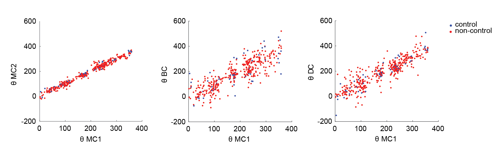
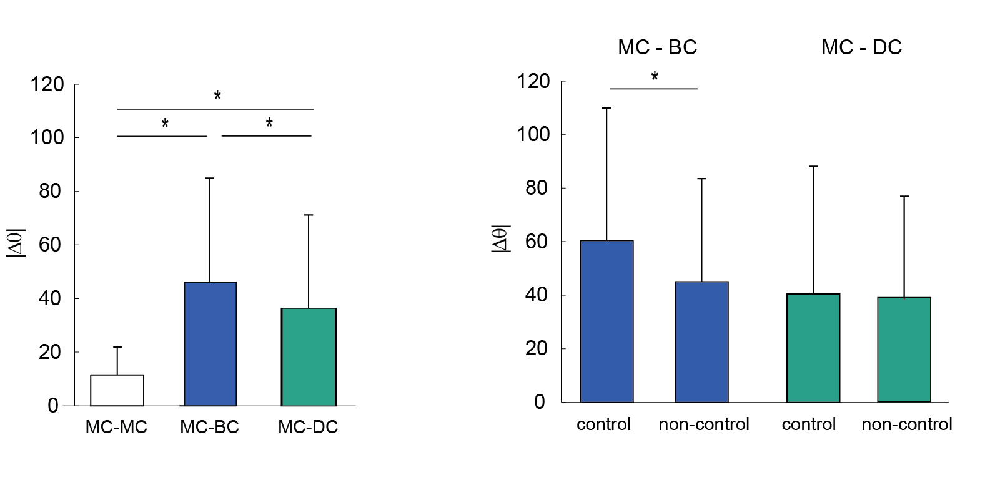
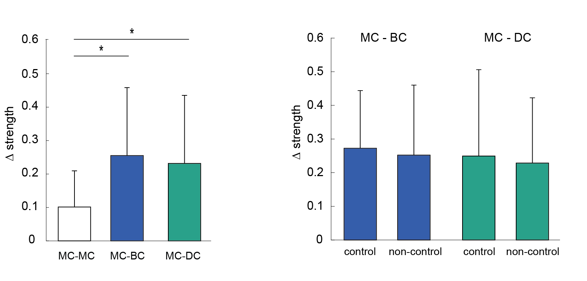
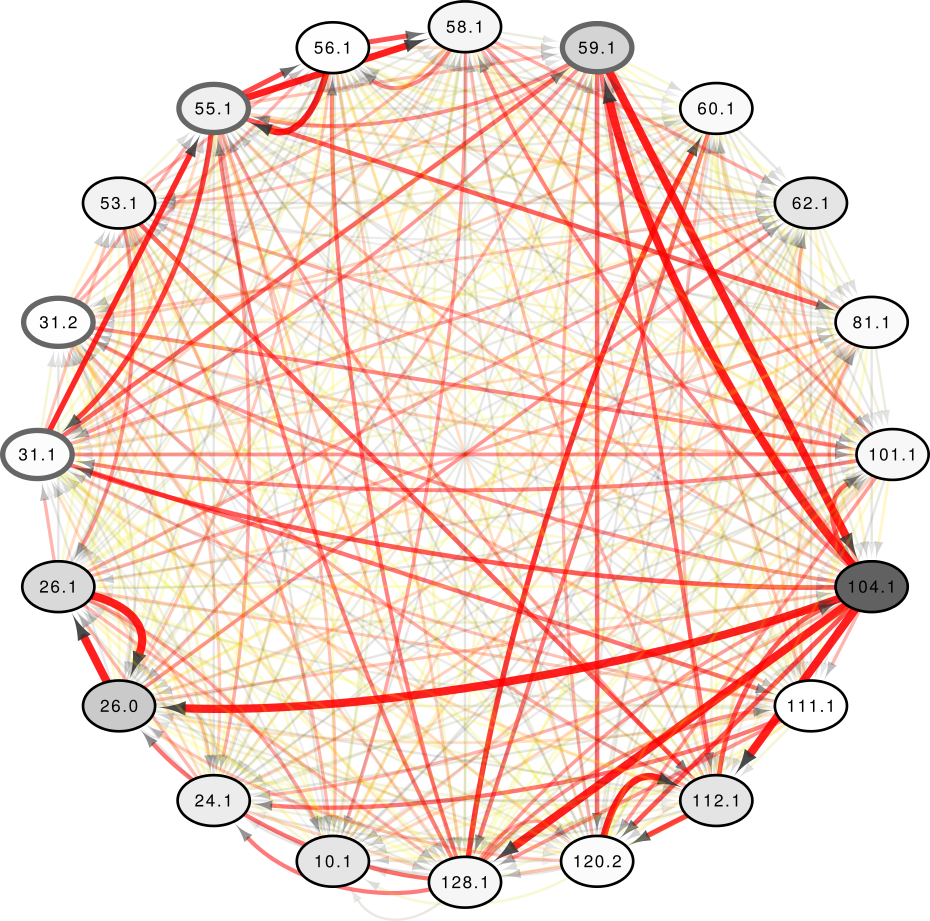
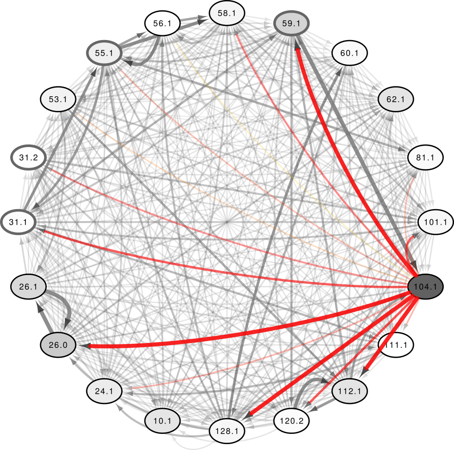
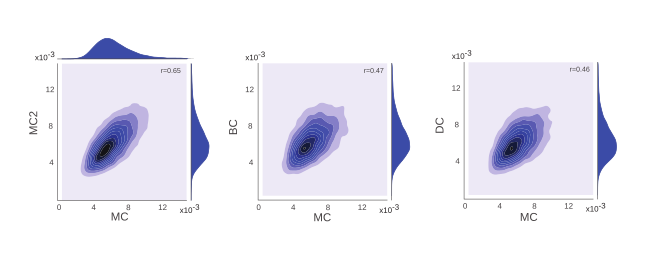
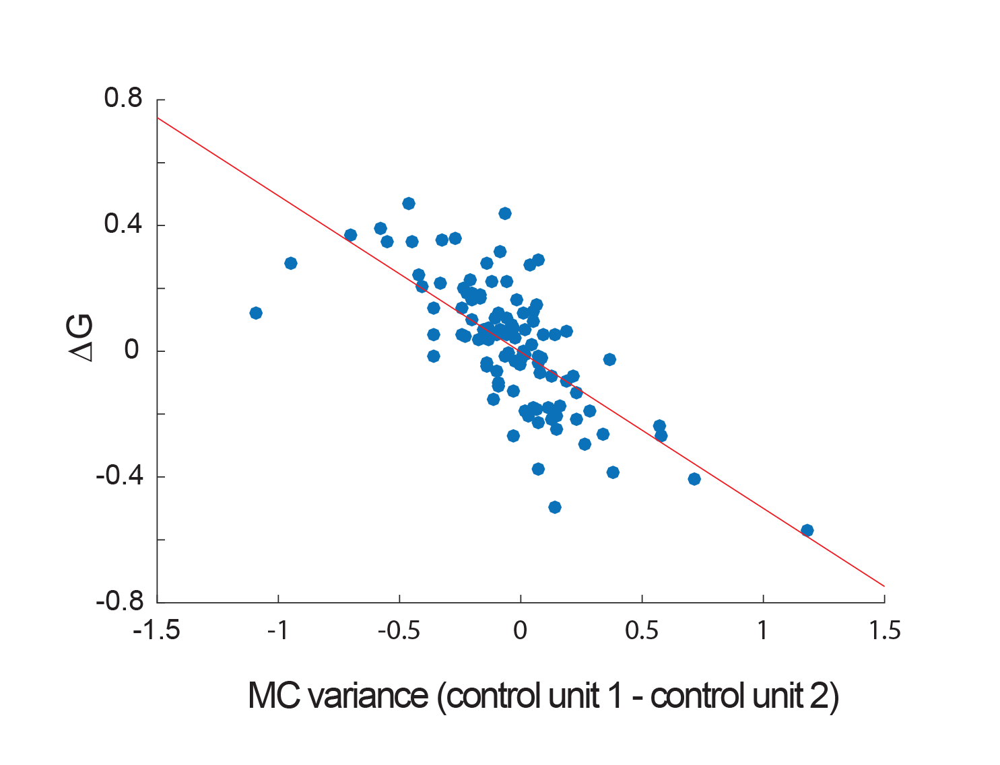

Unraveling principles of motor control: from nerve nets to neural prosthetics
Computational neuroscience seminar Ben Lansdell
Motor encoding and BCI design
Some figure about motor encoding and design of BCIs
Intracortical arrays provide state-of-the-art BCI control
Monkeys (and humans) can be trained to volitionally control individual neurons through feedback and conditioning
Dual-control BCIs
Allow stroke patients to regain functionality through co-opting
healthy motor cortex to control BCI in conjunection with residual movement
Dual-control BCIs
Milovanovic et al 2015
Sub population encoding ipsilateral motion are candidate control source
Performance affected by unit tuning to wrist?
Dual-control BCIs
BCIs induce widespread changes in activity and tuning in variety of tasks and task perturbations
Some studies show control unit specific changes in tuning
How do these effects manifest in a BCI paradigm where control units may be constrained by their role in ongoing movement?
Dual-control BCIs
Milovanovic et al 2015
Previous studies show performance independent of unit tuning
Examine activity of control and non-control units
Utah multi-electrode array implanted in hand/wrist area of primary motor cortex
Random target pursuit task:
Target appears randomly radius outside given cursor position
Acquire target within 5s
Simple linear tuning model:
$$ n^i_t = \alpha_x x_t + \alpha_y y_t + c + \epsilon_t$$
Provides measure of preferred tuning angle $\theta$ and tuning strength
Units chosen with preferred tuning 90 rotated from dual control direction

Widespread changes in unit tuning between conditions
For control and non-control units alike

Brain-control:
56% control units do not significantly change tuning
72% non-control units do not significantly change tuning
Dual-control:
79% control units do not significantly change tuning
81% non-control units do not significantly change tuning

No control unit specific changes in tuning strength


For a fixed network of units, compute transfer entropy between units in each condition:
$$
H_{X\to Y} = I(Y_t|Y_{t-1}, \dots, Y_{t-T}) - I(Y_t|Y_{t-1}, \dots, Y_{t-T},X_{t-1}, \dots, X_{t-T})
$$
for Shannon entropy $I$.
Study differences in connectivity between brain-, dual- conditions and manual condition.

Changes in functional connectivity of population
Brain-control: overall decrease in functional connectivity to control units
Dual-control: functional connectivity between co-tuned units does not change, except when control unit involved
Intrinsic variability predicts performance
Intrinsic variability predicts performance
GPFA used to identify low-dimensional subspace
Identify when spaces are significantly non-orthogonal
Which control unit contributes more to cursor control?
$\beta_t^n$ moving estimate of baseline firing of unit $n$.
Use Granger causality to quantify unit contributions to cursor control, $\mathcal{G}$
Which control unit contributes more to cursor control?

Cursor position determined more by unit with higher intrinsic variance
Which control unit contributes more to cursor control?
High performance requires at least one unit with high intrinsic variance
Summary
Tuning and connectivity analysis suggest dual-control task generates cortical activity more similar to that observed in manual control task
Intrinsic variance of control units only variable found to predict performance and control unit contributions -- motor unit tuning does not constrain how the task is performed
Whole-animal imaging in unconstrained Hydra
Why?
Small (0.5mm -- 1.5cm) -- can fit into FOV of traditional microscope
Translucent; nerve net, easier imaging
Does not age, and can regenerate
Hydra anatomy
Adapted from Technau and Steele 2011
Aims
Understand (and control) neuronal basis of simple behavior such as contracting and expelling
water.
Sub-aims:
Track Hydra pose
Register and track neurons
Record neural activity
Experiment
C. Dupre, Yuste lab
Methods
Create Act-GCaMP6s transgenic Hydra
Mount between coverslips separated by .1mm spacer
Image calcium transients
Whole-body calcium imaging in Hydra
C. Dupre, Yuste lab
Deformable object tracking
Extended Kalman filter tracking
$$\begin{align}y_t &= h(x_t) +\nu_t \\
x_t &= f(x_{t-1}) +\epsilon_t\end{align} $$
Where $x_t$ is the Hydra positions and velocities, $y_t$ is the generated
image.
High-dimensional -- slow
Unstable -- once tracking lost, difficult to recover
Multi-frame optic flow image registration
Multi-frame optic flow image registration
Dense optic flow with subspace constraints
For each pixel find linear combination of basis paths, $L$, that minimize energy
$I_f$ = image at frame $f$,
$I_0$ = reference frame (need not be first frame of video),
$Q_f^u$, $Q_f^v$ = basis paths at frame $f$,
$\alpha$ = smoothness regularizer
Tracking with optic flow
blue = hand tracked neurons
green = w/in 6px of 'true', red = >6px of 'true'
Tracking with optic flow: performance
Comparison to hand annotated neuron tracks
Per frame:
at least 52% neurons are tracked within 6px
on average 82% neurons tracked within 6px
Per neuron:
42% neurons tracked within 6 px throughout all video
Extending to longer sequences
How to mitigate accumulation of errors from video to video?
Stereotyped Hydra behavior: elongate then contract
Measure optic flow error, $f_{ij}(x)$, between frames with regular spacing
'iframes' -- every 250 frames
$\langle f_{ij}(x)\rangle_\Omega$
Frame index
Exploiting periodicity in Hydra behavior
Two clusters: contracted and elongated
$\Rightarrow$ By registering regions of each iframe with a ref. frame we extend paths into temporally distant but positionally related frames
$\Rightarrow$ A mechanism to handle arbitrarily long videos without accumulation of tracking error
$\langle f_{ij}(x)\rangle_\Omega$
Segmenting regions to extend from each reference frame
For $K$ reference frames and $L$ iframes, let $f_{ij}(x)$ represent the optic flow error in using reference image $i$ to construct image $j$.
$$\begin{align}\min_{u}\sum_{l=1}^L\left(\sum_{k=1}^K\langle \nabla u_{kl}, p_{kl} \rangle +\langle u_{kl}, f_{kl} \rangle \right) +\delta_U(u)\end{align}$$
Want number of ref frames to balance global registration vs registration error
$\Rightarrow$ Add a group LASSO penalty for number of reference frames used:
$$\begin{align}\min_{u} \sum_{l=1}^L\left(\sum_{k=1}^K \langle u_{kl}, f_{kl} \rangle \right) +\delta_U(u) + \frac{\lambda_2}{2}\sum_{k=1}^K\left(\sum_{l=1}^L \|u_{kl}\|^2_2 \right)^{1/2} \end{align}$$
Solve with Chambolle algorithm, easily implementable on GPU.
Proposed method
1. Select very sparse set of reference frames (ref frames)
2. Select regular set of inter-frames (iframes)
3. Use optic flow+image segmentation to label regions mapping to reference frames
Proposed method
4. Within each iframe block run MFSF for dense registration
Proposed method
5. Associate each path from (4) with a ref frame using segmentation (3)
Thus every tracked path is associated with a point in a reference frame
Extending with $K=2; L = 8$
Future work
Create larger hand annotated datasets for performance evaluation
Use temporal continuity between adjacent blocks to relate reference frames to one another
Acknowledgments
Adrienne Fairhall
Chet Moritz
Ivana Milovanovic
Cooper Mellema
Eberhard Fetz
Fairhall lab
Anatoly Buchin
Moritz lab
Charlie Matlack
Robert Robinson
Yuste lab
Christophe Dupre
John Szymanski
Funding:
?
Segmenting regions to extend
Mumford-Shah image segmention: divide into $k$ regions of constant color, while trying to minimize perimeter of region boundaries


 Frame index
Frame index